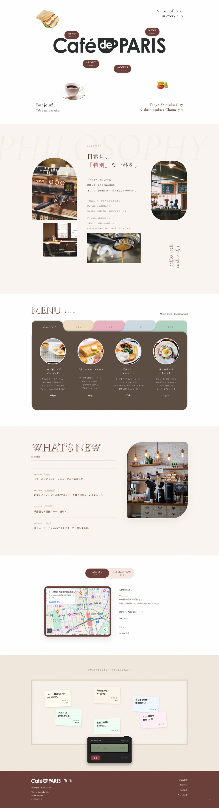

制作プロセス
課題提起
課題で求められた「店舗の雰囲気と食事内容が伝わるTOPページ」を起点に、
見た目の魅力と必要情報へのアクセスしやすさを両立することを制作目標に設定した。
リサーチ
カフェ系サイトを中心に、デザイン（配色・余白・タイポ）と交互動線（ナビ固定、セクション遷移、視線誘導）を調査。
気になった事例はワイヤーフレームとして模写し、レイアウトの型を比較検証した。
コンセプト確定
課題要件を満たしつつ、「A taste of Paris in every cup」を軸に、やわらかく上品な世界観と読みやすい情報設計を両立する方向に決定。
親しみやすい街角カフェの空気感を、写真・配色・余白で表現した。
情報設計
ユーザーの閲覧順を「ファーストビュー → 店舗の想い → MENU → NEWS → ACCESS」に整理。
各セクションに明確な見出しと導線を配置し、必要情報（営業時間・住所・メニュー）へ最短で到達できる構成にした。
画面設計
ワイヤーで情報優先の骨組みを作成後、高保真でビジュアルトーンを統一。
ロゴ・配色・余白・写真トーンを揃え、可読性を崩さない範囲で装飾を調整。
「かわいい」だけで終わらない、実用性のあるUIを目指した。
実装
HTML/CSS/JavaScriptで実装し、レスポンシブ対応まで含めて仕上げた。
Geminiの新モデルを使ってvibe codingを試し、メッセージセクションを追加実装した。
振り返り
課題要件の達成に加えて、参考調査→模写→再設計の流れが有効だと実感した。
AI活用は速度面で効果があった一方、最終的な構成判断・デザイン整合は自分で担う必要があると感じた。
今後は、実ユーザーテストを通じて導線と情報優先度をさらに改善したい。
学んだこと
設計前リサーチの効果
いきなり作り始めるより、参考分析とワイヤー模写を先に行うことで、レイアウト判断が速くなり、修正コストを大きく減らせると分かった。
UIは見た目＋導線で評価される
ビジュアルの統一感だけでなく、「必要情報にどれだけ迷わず辿り着けるか」が体験品質を決めると実感した。
AI活用の実践知
vibe codingで実装スピードは上がるが、情報設計・可読性・トーン統一などの品質担保は人間の設計力が不可欠だと理解した。
デザイン一覧

ワイヤーフレーム

デザインカンプ

最終デザイン